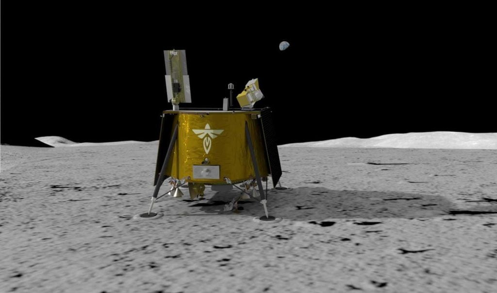

အမေရိကန် အာကာသ အေဂျင်စီ ဖြစ်တဲ့ နာဆာ အဖွဲ့ကြီးဟာ လပေါ်မှာ GPS လမ်းညွှန် ဂြိုဟ်တု စီမံကိန်း နှစ်ခု အကောင်အထည် ဖေါ်ဖို့ စီမံလျှက် ရှိပါတယ်။ အကယ်လို့ ဒီ စီမံကိန်းတွေသာ အောင်မြင်မယ် ဆိုရင် အနာဂါတ် အာကာသ ယာဉ်မှူးတွေဟာ လပေါ်မှာ သူတို့ ရောက်ရှိရာ နေရာ အတိအကျကို ကမ္ဘာပေါ်မှာ လိုပဲ GPS နဲ့ အလွယ်တကူ ရှာဖွေနိုင် တော့မှာ ဖြစ်တယ်လို့ သိရပါတယ်။
GPS လမ်းညွှန်စနစ်ဆိုတာ ဘာလဲ
ကမ္ဘာပေါ်မှာတော့ ဒီလို GPS လမ်းညွှန်စနစ်ကို အသုံးပြုပြီ တည်နေရာ ရှာဖွေဖို့ အတွက် ကမ္ဘာပတ် လမ်းကြောင်းထဲ လွှတ်တင်ထားတဲ့ တည်နေရာ လမ်းညွှန် ဂြိုဟ်တုတွေကို အသုံးပြု ကြရပါတယ်။ဒီ ဂြိုဟ်တုတွေဟာ ရေဒီယို အချက်ပြ လှိုင်း တွေကို ကမ္ဘာ့ မျက်နှာပြင်ကို ဦးတည်ပြီး အဆက်မပြတ် ထုတ်လွှင့် ပေးနေပါတယ်။
ကမ္ဘာပေါ်မှာ ရှိတဲ့ ဖုန်းတွေ နဲ့ တည်နေရာရှာ ကိရိယာတွေက ဒီ GPS အချက်ပြလှိုင်း တွေကို ဖမ်းယူပြီး သူတို့နဲ့ ဒီ ဂြိုဟ်တု တွေနဲ့ ကြားက အကွာအဝေးကို ပြန် တွက်ယူ ကြပါတယ်။ ဒီ ကိရိယာ တွေဟာ GPS ဂြိုဟ်တု အများအပြားက လာတဲ့ အချက်ပြ လှိုင်းတွေကို ဖမ်းယူပြီး ကမ္ဘာပေါ်က တည်နေရာ အတိအကျကို ပြန်လည် တွက်ချက် ကြတာ ဖြစ်ပါတယ်။
ဒါကြောင့်မို့ အချက်ပြလှိုင်း ဖမ်းယူနိုင်တဲ့ ဂြိုဟ်တု အရေအတွက် များလေလေ တည်နေရာကို အတိအကျ ပိုမိုမှန်ကန်အောင် တွက်ချက်နိုင် လေလေပဲ ဖြစ်ပါတယ်။
အာကာသထဲက GPS
အာကာသ အေဂျင်စီ တွေဟာလဲ လမျက်နှာပြင်နဲ့ လနဲ့ ကမ္ဘာကြား ဟင်းလင်းပြင်မှာ တည်နေရာ အတိအကျ တွက်ချက်နိုင်ဖို့ GPS စနစ်ကို အသုံးပြုလို ကြပါတယ်။ ဒါပေမယ့် ပြဿနာက ကမ္ဘာပတ် လမ်းကြောင်းထဲက GPS ဂြိုဟ်တုတွေက ထုတ်လွှင့်တဲ့ အချက်ပြ လှိုင်းတွေဟာ လကို ရောက်တဲ့ အချိန်မှာ အရမ်းပဲ အားနည်း သွားပြီ ဖြစ်ပါတယ်။လပေါ်က ဖမ်းယူရရှိတဲ့ GPS အချက်ပြ လှိုင်းတွေဟာ ကမ္ဘာ့ မျက်နှာပြင်မှာ ဖမ်းယူရရှိတဲ့ လှိုင်းရဲ့ ၁၀၀၀ ပုံ ၁ ပုံလောက်ပဲ အားရှိပါတယ်။ ဒါ့အပြင် လှိုင်းတွေ အားလုံးက ကမ္ဘာနဲ့ မျက်နှာမူ နေတဲ့ အခြမ်းကပဲ လာနေကြတာ ဖြစ်ပြီး ကမ္ဘာနဲ့ ဆန့်ကျင်ဖက် မှာတော့ ဘာ GPS ဂြိုဟ်တုမှ မရှိတာမို့ ဘာလှိုင်းမှ ဖမ်းယူ ရရှိခြင်း မရှိပါဘူး။
LuGRE ဂြိုဟ်တု
ဒါပေမယ့် ဒါတွေ အားလုံး မကြာမီ ပြောင်းလဲသွားတော့မှာ ဖြစ်ပါတယ်။ လာမယ့် ၂၀၂၄ ခုနှစ်ထဲမှာ နာဆာကနေ Lunar GNSS Receiver Experiment (LuGRE) ဂြိုဟ်တုကို လွှတ်တင်ဖို့ စီစဉ်နေ ပါတယ်။ ဒီ ဂြိုဟ်တုဟာ နာဆာ အဖွဲ့ကြီးနဲ့ အီတလီ အာကာသ အေဂျင်စီ (Italian Space Agency) တို့ ပူးပေါင်း စီစဉ်တဲ့ စီမံကိန်း ဖြစ်ပါတယ်။ဒီ LuGRE ဂြိုဟ်တုကို လ ပတ် လမ်းကြောင်းထဲကို လွှတ်တင်မှာ ဖြစ်ပါတယ်။ ဒီ ဂြိုဟ်တုဟာ ကမ္ဘာပေါ်က အဓိက ဂြိုဟ်တု လမ်းညွှန်စနစ် နှစ်ခု ဖြစ်တဲ့ GPS နဲ့ Galileo စနစ်က ဂြိုဟ်တုတွေ ကနေ ထုတ်လွှင့်တဲ့ အားနည်းတဲ့ ရေဒီယို အချက်ပြ လှိုင်းတွေကို ဖမ်းယူနိုင်မယ့် စနစ်ကို တပ်ဆင် ထားမှာ ဖြစ်ပါတယ်။

ဒီ ဂြိုဟ်တုရဲ့ စီမံကိန်း ကာလကိ လောလောဆယ်တော့ ၁၂ ရက်ပဲ သတ်မှတ် ထားပါတယ်။ ဒီဂြိုဟ်တုရဲ့ အဓိက ရည်မှန်းချက် ကတော့ လမျက်နှာပြင် ကနေ ကမ္ဘာပေါ်က GPS အချက်ပြ လှိုင်းတွေကို ဖမ်းယူနိုင်မှု အခြေအနေကို လေ့လာ စမ်းစစ်ဖို့ ဖြစ်ပါတယ်။ ဒီ ရရှိတဲ့ အချက်အလက် တွေကို အခြေပြုပြီး လမျက်နှာပြင်မှာ အသုံးပြု နိုင်မယ့် GPS စနစ်တခု တည်ဆောက် သွားမယ်လို့ ဆိုပါတယ်။
Lunar Pathfinder
နာဆာ အဖွဲ့ကြီးဟာ ဥရောပ အာကာသ အေဂျင်စီ (ESA) နဲ့ ပူးပေါင်းပြီး နောက်ထပ် ဂြိုဟ်တုလမ်းညွှန် စီမံကိန်း တစ်ခုကိုလဲ စီမံ နေပါတယ်။ဒါကတော့ လာမယ့် ၂၀၂၅ မှာ လပတ်လမ်းကြောင်းထဲကို လွှတ်တင်မယ့် Lunar Pathfinder ဂြိုဟ်တုပဲ ဖြစ်ပါတယ်။ ဒီ ဂြိုဟ်တု ပေါ်မှာတော့ NaviMoon ဂြိုဟ်တု လမ်းညွှန် အချက်ပြလှိုင်း ဖမ်းစက်ကို သယ်ဆောင်သွားမှာ ဖြစ်ပါတယ်။
ဒီ Lunar Pathfinder ဂြိုဟ်တု လပတ်လမ်းထဲ ရောက်ရှိ သွားပြီးနောက် သူ့မှာ သယ်ဆောင်သွားတဲ့ လှိုင်းဖမ်းစက်နဲ့ ကမ္ဘာပေါ်က GPS နဲ့ Galileo ဂြိုဟ်တု အချက်ပြ လှိုင်းတွေကို ဖမ်းယူမှာ ဖြစ်ပါတယ်။ ဒါ့အပြင် ကမ္ဘာ၊ လ နဲ့ နေတို့က သက်ရောက်ရောက်တဲ့ ဆွဲငင်အား ပမာဏ ကိုလဲတိုင်းတာနိုင်တဲ့ စနစ်ကို သယ်ဆောင်သွားမှာ ဖြစ်ပါတယ်။
ဒီ စနစ် တွေက ရရှိတဲ့ အချက်အလက်တွေ အားလုံးကို ပေါင်းစပ်လိုက် တဲ့အခါမှာ ဒီ ဂြိဟ်တုရဲ့ တည်နေရာကို မီတာ ၁၀၀ အတွင်းအထိ အတိအကျ တွက်ချက်နိုင်မှာ ဖြစ်တယ်လို့ ဆိုပါတယ်။
ဒီ ဂြိုဟ်တု စီမံကိန်းဟာ NaviMoon လှိုင်းဖမ်းစက် အလုပ် ကောင်းကောင်း လုပ်တယ်ဆိုတာ သက်သေပြ နိုင်ဖို့ ပြုလုပ်တဲ့ စီမံကိန်း ဖြစ်ပါတယ်။ နောက်တဆင့် ကတော့ ဒီ NaviMoon လှိုင်းဖမ်းစက် သယ်ဆောင်ထားတဲ့ လပတ်ဂြိုဟ်တု အများအပြားကို လပတ် လမ်းကြောင်းထဲ လွှတ်တင်နိုင်ဖို့ပဲ ဖြစ်ပါတယ်။
ဒီ NaviMoon ဂြိုဟ်တု တွေကနေ ထပ်ဆင့်ပြီး သူတို့ ကိုယ်ပိုင် GPS အချက်ပြ တွေကို ထပ်ဆင့် ထုတ်လွှင့်ပေးမှာ ဖြစ်ပါတယ်။ ဒီ ထပ်ဆင့်လွှင့် GPS လှိုင်းတွေကို ဖမ်းယူပြီး လမျက်နှာပြင် ပေါ်က အာကာသ ယာဉ်မှူးတွေနဲ့ ယာဉ်တွေ အနေနဲ့ သူတို့ရဲ့ တည်နေရာ အတိအကျကို ရှာဖွေနိုင် ကြမှာ ဖြစ်တယ်လို့ သိရပါတယ်။
Ref: NASA and ESA are racing to bring GPS to the moon | Free Think